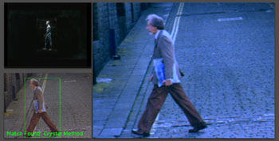

Amy Alexander, Jesse Gilbert, Wojciech Kosma, Vincent Rabaud, Nikhil Rasiwasia Surveillance Video Entertainment Network (aka AI to the People)  SVEN is a system consisting of a camera, monitor, two computers, and custom software, that can be set up in public places - especially in situations where a CCTV monitor might be expected. The software consists of a custom computer vision application that tracks pedestrians and detects their characteristics, and a real-time video processing application that receives this information and uses it to generate music video-like visuals from the live camera feed. The resulting video and audio are displayed on a monitor in the public space, interrupting the standard security camera type display each time a potential rock star is detected. The idea is to humorously examine and demystify concerns about surveillance and computer systems not in terms of being watched, but in terms of how the watching is being done - and how else it might be done if other people were at the wheel...
The project involves the development of two software applications - one for computer vision, the other for real-time video processing - that work in tandem. The system based on these applications is performed in mobile or stationary public environments (on the street, in indoor locations like libraries, etc, or in a parked van or other vehicle.) The computer vision software we are developing utilizes face and pattern recognition techniques - typically used in less pleasant artificial intelligence surveillance applications - to determine similarities between people appearing on surveillance cameras and typical shots of people in music videos. This software then communicates with a piece of custom video software running on a separate computer, which processes the video in various ways to look like music video shots. These techniques include not only static image processing, but also application of film grammar and music video cinematography and editing techniques (cutting, framing, etc.) The project poses the question: if surveillance and artificial intelligence technologies can detect when you look like a criminal or activist (undesirable), why not have them detect when you look like desirable, like a music video star? Hi-tech development lately extends into the realm of what we might call "benign magic." Benign magical technologies are those presented to us in ways that seem too mysterious for us to understand, but, we are told, they are performed by software algorithms and so therefore, they must be objective, trustworthy, and beyond human manipulation. There's only problem with this logic: algorithms are written by humans, so they are necessarily subjective. Unfortunately, since the algorithms are magic (we can't understand them) often we're inclined to regard ourselves as necessarily victims of them - particularly in the case of technologies used in contexts like surveillance (which already comes loaded with the baggage of Foucault and years of assorted commentary. ) SVEN approaches this topic by suggesting that we can take some of these technologies into our own hands, and come up with our own subjective algorithms that serve our own purposes. It hopefully also raises some questions in the process about just what "the man" might be doing through software - but hopefully we also demystify the process to some extent so people can also consider what is probably in our heads and not possible with software. In addition, we're experiencing the ongoing blending of Silicon Valley and Hollywood, and the federal government perpetually in bed with both, while never ceasing to amaze us with their own highly imaginative endeavors in hi-tech surveillance. So it seems that surveillance software for rock star detection and automated music video generation could be a growth industry for the region. Credits Production Assistant: Marilia Maschion Links http://deprogramming.us/ai
http://www.we-make-money-not-art.com/archives/008023.php
http://www.tvkultura.ru/news.html?id=89996&cid=1282
http://www.monochrom.at/english/2006/02/sven-surveillance-video-entertainment.htm
http://www.lastampa.it/cmstp/rubriche/girata.asp?ID_blog=33&ID_articolo=59&ID_sezione=43&sezione=Zoom
http://kommunikationsguerilla.twoday.net/topics/Aktionsvorschlaege/ http://atze.exelive.net/wp |